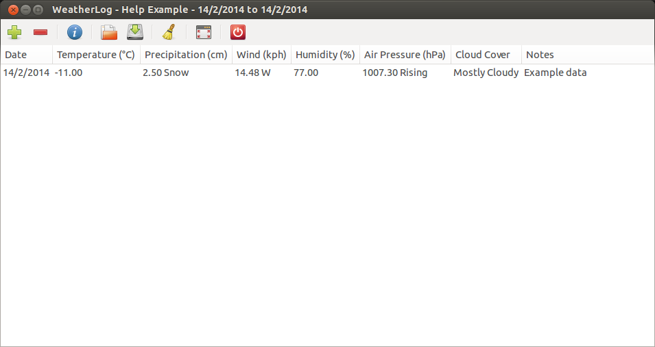

Editing Data
Sometimes you may accidently enter data incorrectly, or forget to put something in. If that happens, you can edit the data after it has been saved.
In this image, when the user added the data they forgot to add that it had snowed on this day as well:

To edit the data, select the Edit item in the Weather menu, or press Control-E to open the edit window.

It is then possible to change the data. Every field can be changed, with the exception of the date. The next image shows that the precipitation has been changed to 2.5 cm of snow.

The data is then changed.
